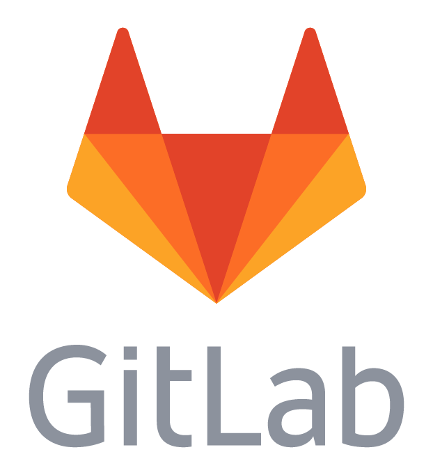

Le Versionning
Une fois qu'une première version du projet a été réalisée, il est désormais temps de le faire évoluer.
Pour ce faire on va réaliser plusieurs versions de l'application ou du site.
Ces versions peuvent être majeures ou mineures.
Elles peuvent être dues à l'ajout d'une nouvelle fonction ou à une faille de sécurité, issues aussi bien d'une
montée
de version que d'une vulnérabilité.
Dans tous les cas il faut maintenir son code à jour.
user style sheets.
On met ainsi en place un versioning.
On utilisera le plus souvent git
pour enregistrer différentes versions du code.
Voici la bonne pratique pour enregistrer une nouvelle version.
# Initialisation d'un repo git
git init
# Ajouter les modifications
git add .
# Enregistrer les modifications
git commit -m"Un message indiquant les modifications apportées à chaque fichier"
Attention: ces modifications seront uniquement enregistrées localement sur la branche git
active
(voir doc)
Dans le cadre d'une application ou d'un site, on poussera ces modifications vers un dépôt en ligne.
De cette manière on peut non seulement mettre en commun le travail, mais aussi publier les différentes versions
de manière successives tout en conservant les anciennes.
Cependant: on ne pousse pas ses modifications n'importe comment au risque d'effacer le travail
commun.
Après avoir commit ses modifications en local on :
- Se met à jour avec le dépôt à distance
- Résout les conflits existants
- Alors seulement on pousse ses modifications
# Se mettre à jour avec le repo en ligne
git pull origin BranchDeTravail
# On vérifie que l'on est à jour et on résouds les conlfit.
git push origin BranchDeTravail
Les Dépots
Il existe plusieurs solutions pour de repos en ligne. Le plus connus sont git-hub et git lab.
| Caractéristique | GitHub | GitLab |
|---|---|---|
| Logo |
|
 |
| Open Source | Partiellement. Interface et fonctionnalités propriétaires, mais certains composants sont open source | Complètement open source (licence MIT). Version Community Edition disponible gratuitement |
| Détenteur | Microsoft (depuis 2018) | GitLab Inc. |
| Types de projets adaptés |
• Idéal pour projets open source • Collaboration massive (millions de contributeurs) • Projets de toutes tailles, mais particulièrement fort pour l'open source |
• Adapté aux projets d'entreprise et privés • Équipes de toutes tailles • Particulièrement adapté pour les entreprises souhaitant héberger leur propre instance |
| Solutions CI | GitHub Actions - Intégration flexible, workflows basés sur YAML, intégration native | GitLab CI/CD - Puissant, natif, avec pipeline as code et interface intuitive pour visualiser les étapes |
| Solutions CD | GitHub Actions avec support déploiement, intégration avec services AWS, Azure, GCP, etc. | Système CD natif intégré avec Auto DevOps, environnements de préproduction, déploiements Kubernetes, etc. |
| Hébergement de sites | GitHub Pages - Simple, gratuit, idéal pour la documentation statique, blogs et sites personnels | GitLab Pages - Similaire à GitHub Pages mais avec plus d'options de configuration via CI/CD |
| Gestion de la documentation |
• Wiki intégré • Support Markdown • GitHub Pages pour documentation statique • Intégration facile avec Jekyll |
• Wiki plus avancé avec historique complet • Support Markdown • Documentation spécifique par environnement • Intégration avec plusieurs générateurs de sites statiques |
| Gestion de projet |
• Issues et projets basiques • GitHub Projects (tableau kanban) • Milestones • Limité par rapport à des outils dédiés |
• Suite complète d'outils (issues, milestones, epics) • Tableaux kanban avancés • Roadmaps • Peut remplacer des outils comme Jira |
| Self-Hosting | Enterprise version disponible, mais coûteuse et moins flexible | Totalement possible et relativement simple, option populaire pour les entreprises avec Community Edition gratuite |
| Intégration DevOps | Modèle modulaire avec Marketplace et intégrations tierces | Solution DevOps tout-en-un (référentiel, CI/CD, sécurité, monitoring) |
{kind=link}
Il existe également d'autres solutions pour les dépôts en ligne comme SourceForge (vieux), Launchpad (Ubuntu), etc...
Le choix de la plateforme sera à faire en fonction du projet.
CI/CD : Intégration et Déploiement continus
- CI - Intégration continue
- Continuous Integration en anglais
- CD - Déploiement continu
- Continuous Deployment en anglais
Grâce au versioning et au dépôt en ligne on peut mettre en place un développement et une intégration
en continue ou CI.
L'intégration continue consiste à pousser différentes versions de manière incrémentielle.
Plutôt que de travailler en livrant toutes les fonctions d'un coup, on ajoute au fur et à mesure les
différentes fonctions et correctifs.
Cela permet de :
- Faciliter la résolution des bugs vu qu'une moins grande quantité de code est poussée
- Incrémenter en continu de nouvelles fonctions
- Tester plus facilement les différentes fonctions
Le développement continu ou continuous development CD en anglais peut lui aussi être
mis en place grâce au versioning.
En plus d'une intégration continue, on va également pousser les dernières intégrations une fois
testées vers les serveurs de production.
On peut ainsi :
- Automatiser l'implémentation de fonctions
- Maintenir le site ou projet à jour
- Suivre et documenter toutes les versions du projet
- Faire des backups si nécessaire
La CI/CD peut être entièrement automatisé par les plateforme de dépot en ligne. Chez git hub on trouvera
des Actions.
Chez git lab on trouvera les pipelines CI/CD tuyautrie en anglais
Outils Git avancés
Git hooks
Les hooks sont des scripts qui s'exécutent automatiquement lors de certaines actions Git. Exemples courants :
pre-commit: vérification du code avant commit (linting, tests unitaires)pre-push: validation avant de pousser des modificationspost-receive: déclenchement d'actions après réception de modifications
Git LFS (Large File Storage)
Permet de gérer efficacement les fichiers volumineux (images, vidéos, binaires) :
- Remplace les gros fichiers par des pointeurs légers dans le dépôt
- Stocke le contenu réel séparément
- Idéal pour les projets avec des ressources multimédias
Interfaces graphiques
Pour ceux qui préfèrent une approche visuelle :
- GitKraken : interface moderne et intuitive
- Sourcetree : outil gratuit d'Atlassian
- GitHub Desktop : solution simple orientée GitHub
- Extensions IDE : intégration dans VS Code, IntelliJ, etc.
Bonnes pratiques de versioning
Stratégies de branches
Choisir une stratégie de branches adaptée est essentiel pour organiser efficacement le développement en équipe. Voici quelques exemples.
GitFlow
Modèle robuste avec structure de branches hiérarchisée, idéal pour les projets avec des cycles de release planifiés.
- Branches principales:
main(oumaster): code en production uniquementdevelop: branche d'intégration des fonctionnalités
- Branches de support:
feature/*: développement de nouvelles fonctionnalités (à partir dedevelop)release/*: préparation des versions (à partir dedevelop)hotfix/*: corrections d'urgence en production (à partir demain)
- Avantages: structure claire, gestion précise des versions, adapté aux équipes distribuées
- Inconvénients: peut sembler complexe pour de petits projets, nombreuses branches à gérer
GitHub Flow
Modèle simplifié favorisant le déploiement continu, populaire pour les applications web et les services en ligne.
- Principe: une seule branche principale (
main) considérée comme toujours déployable - Workflow:
- Créer une branche descriptive à partir de
mainpour chaque fonctionnalité/correctif - Effectuer des commits réguliers sur cette branche
- Ouvrir une Pull Request dès que possible pour discussion
- Après revue et validation, merger dans
main - Déployer immédiatement après merge
- Créer une branche descriptive à partir de
- Avantages: simplicité, adapté au déploiement continu, facile à comprendre
- Inconvénients: moins adapté aux projets nécessitant plusieurs versions en parallèle
Trunk-Based Development
Approche minimaliste où tous les développeurs travaillent principalement sur une seule branche (trunk ou main).
- Principe: éviter les branches de longue durée, privilégier l'intégration rapide et fréquente
- Techniques clés:
- Feature Toggles: code activé/désactivé via configuration sans changement de branche
- Branch by Abstraction: refactoring progressif pour modifications majeures
- Intégrations multiples par jour dans la branche principale
- Courtes branches de fonctionnalités (1-2 jours maximum)
- Avantages: minimise les conflits de merge, facilite l'intégration continue, réduit la dette technique
- Inconvénients: nécessite des tests automatisés solides, maturité d'équipe et rigueur
Quelle stratégie choisir?
| Type de projet | Stratégie recommandée |
|---|---|
| Applications avec releases périodiques | GitFlow |
| Applications web avec déploiement fréquent | GitHub Flow |
| Équipes DevOps matures avec bonne couverture de tests | Trunk-Based Development |
| Projets open-source | GitHub Flow ou GitFlow simplifié |
| Petites équipes (1-3 développeurs) | GitHub Flow (plus simple à gérer) |
Versioning sémantique
Le versioning sémantique (X.Y.Z) :
- X : version majeure (changements incompatibles)
- Y : version mineure (ajouts compatibles)
- Z : patch (corrections de bugs)